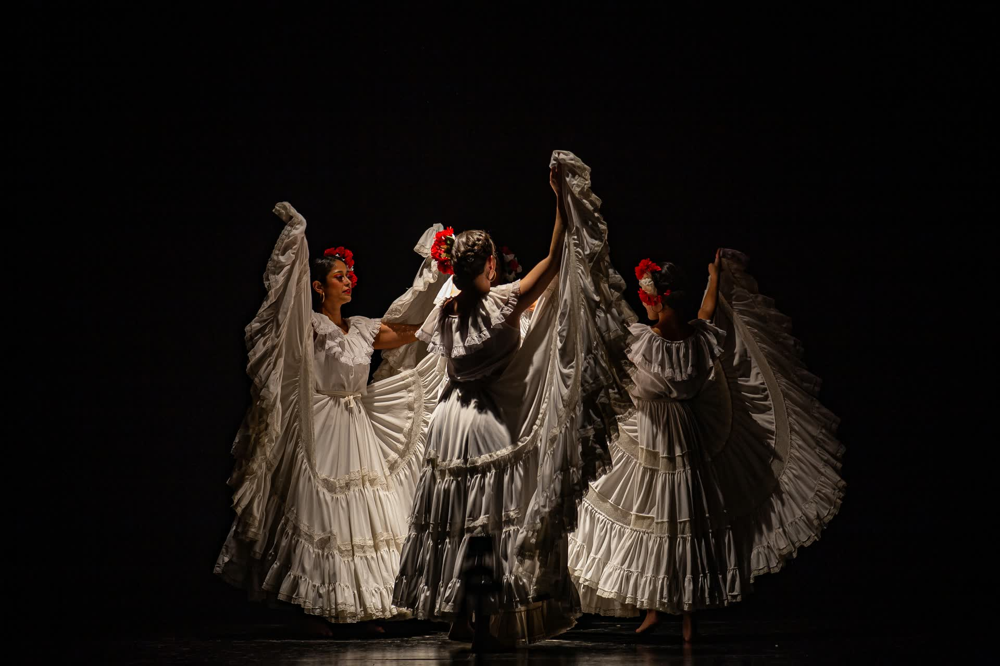
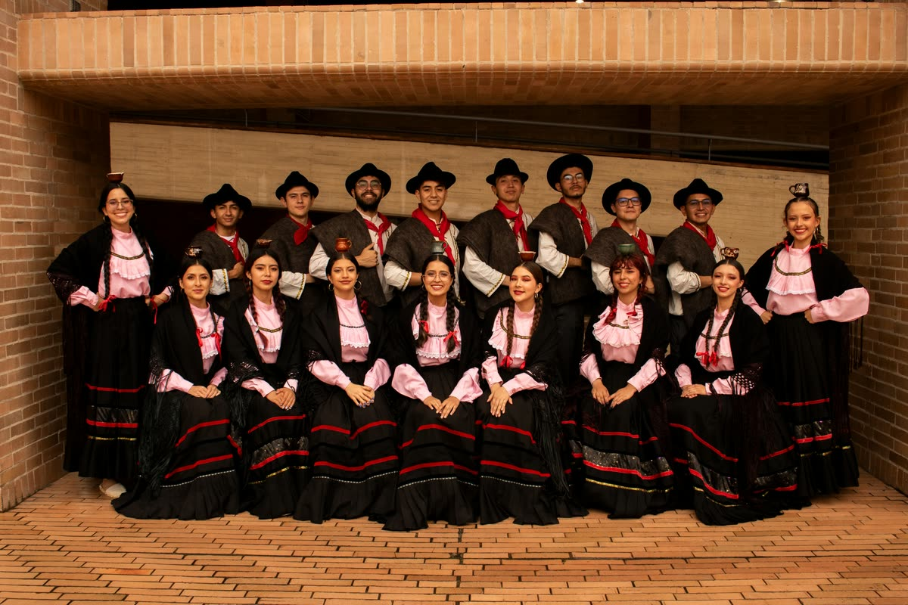
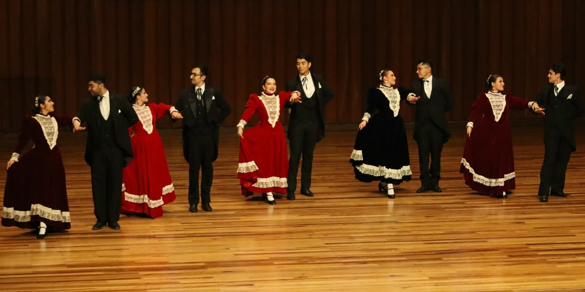

Vienes a la gala
Miércoles 18 de noviembre, 7:10 p. m.
Auditorio León de Greiff, Ciudad Universitaria. Once danzas en seis bloques.

Grupo de Danzas Folclóricas de la Universidad Nacional de Colombia, sede Bogotá.
Desde 1936, por el grupo han pasado muchos maestros y generaciones de estudiantes que han llevado las danzas de las regiones del país a escena. Este año celebramos noventa años con una gala.
Miércoles 18 de noviembre, 7:10 p. m.
Auditorio León de Greiff, Ciudad Universitaria. Once danzas en seis bloques.
Entra con tu correo de la universidad y mira qué bailas, a qué hora sales a escena, qué vestuario alistas y con quién bailas cada danza.
¿Eres egresado y no tienes correo UNAL?

Lo que bailamos hoy lo aprendimos de quienes bailaron antes.

Noventa años llevando las danzas de Colombia a escena.

Cada región del país tiene su danza, y aquí la seguimos bailando.

Los maestros nos enseñaron, y ahora enseñamos a los que llegan.

Por el grupo han pasado generaciones de estudiantes de la Universidad.

Cada ensayo suma a una historia que empezó hace noventa años.

Noventa años después, seguimos tomados de la mano.
Modo administrador: puedes vincular correos, borrar personas y restaurar datos. Esos cambios afectan a todos.
Toca una casilla para asignar o quitar; si no se puede, el motivo aparece abajo. Toca el nombre para ver el detalle de la persona. Bajo cada danza va su cupo: H para hombres y M para mujeres.
Borrar quita a la persona del grupo junto con todas sus danzas, para todos los usuarios. No se puede deshacer.
Dentro de un bloque se usa el mismo vestuario: solo hay cambio al pasar de un bloque a otro.
Prendas que se usan en danzas de bloques distintos. Con poco margen, quien sale debe dejarlas listas para quien entra.
Cada prenda muestra cuántas hay frente a las necesarias. En rojo, lo que falta para quienes ya están asignados; en amarillo, lo que falta para completar el cupo. Los faltantes se compran el fin de semana.
Los cambios se guardan solos en la base de datos. Exportar descarga una copia del elenco en Excel.
Reemplaza todas las personas y asignaciones con las del archivo, para todos los usuarios. Úsalo solo en caso de emergencia y exporta antes una copia.